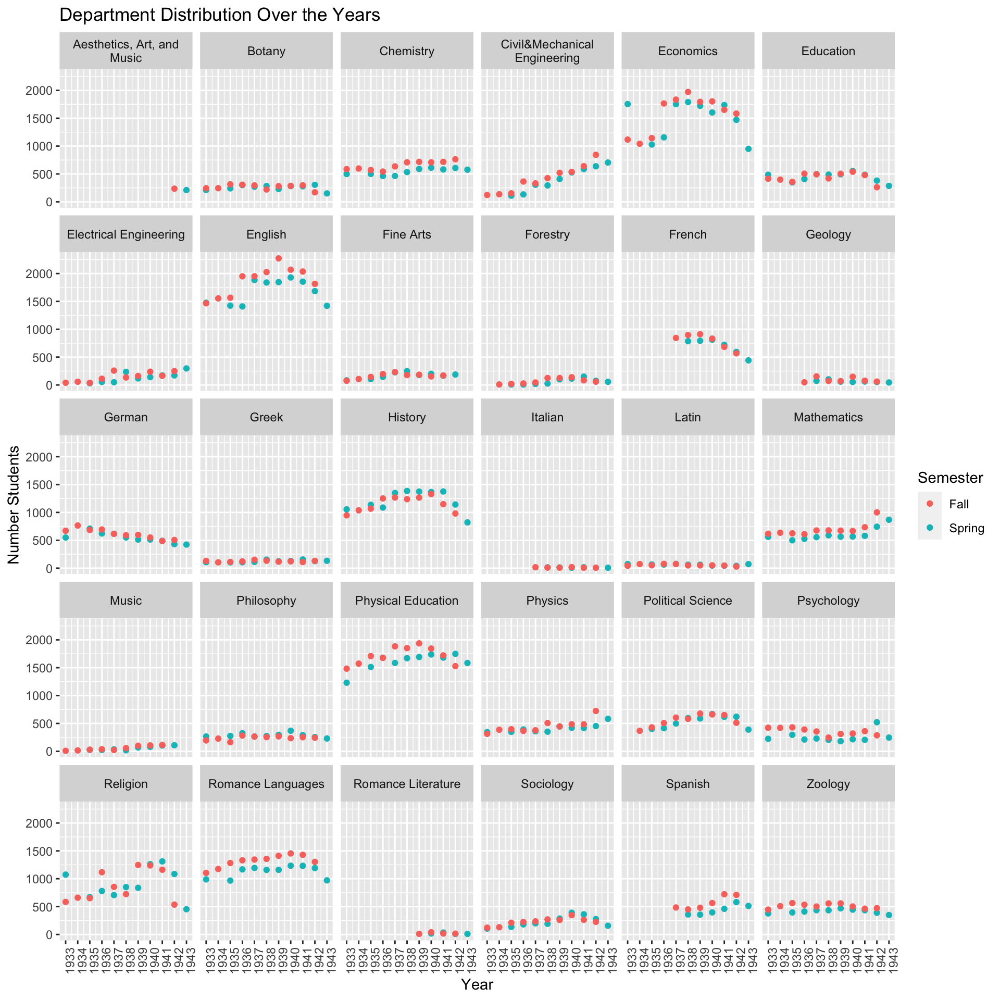
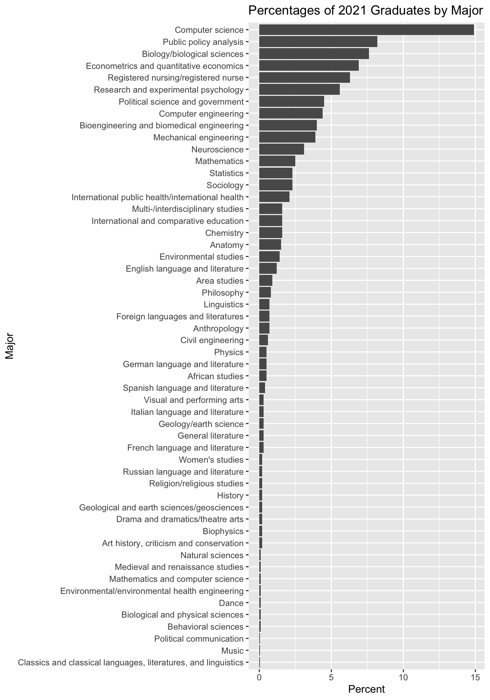

Department Distribution
Duke, being one of the most prestigious universities in the country, is renowned for its outstanding academics and extensive educational opportunities. In particular, Duke has quite the selection of courses and areas of study. As boasted by Duke’s Office of Undergraduate Admissions, the university offers 53 majors, 52 minors, and 23 certificates:
“With the ability to create combinations of the three, you have 437,989 unique academic combinations available.”
Duke’s selection of majors has undergone pretty drastic changes since its founding. On this page, we will look more closely at the departments over a span of 10 years, from 1933 to 1943. What changes were there in undergraduate student enrollment by department, and how do these numbers compare with the breakdown of majors today?

From Figure 1, we can see that the most popular subjects during this decade were Economics, English, History, Physical Education, Religion, and Romance Languages. For all of these, however, it seems enrollment seemed to peak around 1939-1940 and started to decrease. This may be just the beginning of the gradual shift towards the present-day distribution, as we can compare with Table 1. Most of the most popular majors now did not even exist back then. Of these 6 top majors in the 30s-40s, a few don’t exist anymore today, or exist in modified forms. For example, Physical Education is no longer offered as a major, though PE classes are still offered. Romance Languages is no longer under an umbrella term, but students may choose to study individual languages like French, Spanish, and Italian. With the exception of Economics, which is still one of the most popular majors, making up 6.9% of graduates, the other 5 have decreased in popularity, and their percentages can be seen in Table 1.
In just one decade, many changes were made in the selection of majors. Let’s break these down year-by-year:
- Fall 1933:
- Engineering was split into Civil&Mechanical and Electrical Engineering.
- Music was added.
- Physical Education was split into men and women. (These two were combined during data collection for consistency)
- Fall 1934:
- Forestry was added.
- Political Science was added.
- Fall 1935:
- Economics became Economics and Business Administration. (Still called Economics in data collection for consistency)
- Fall 1936:
- Geology was added.
- Fall 1937:
- Civil&Mechanical Engineering was split into Civil Engineering and Mechanical Engineering. (Data was collected separately for the years after this split, but were combined for visual consistency)
- Romance Languages was separated into French, Italian, Spanish.
- Fall 1942:
- Fine Arts and Music were combined into Aesthetics, Art, and Music.

| Major | Percent |
|---|---|
| Computer science | 14.9% |
| Public policy analysis | 8.2% |
| Biology/biological sciences | 7.6% |
| Econometrics and quantitative economics | 6.9% |
| Registered nursing/registered nurse | 6.3% |
| Research and experimental psychology | 5.6% |
| Political science and government | 4.5% |
| Computer engineering | 4.4% |
| Bioengineering and biomedical engineering | 4.0% |
| Mechanical engineering | 3.9% |
| Neuroscience | 3.1% |
| Mathematics | 2.5% |
| Statistics | 2.3% |
| Sociology | 2.3% |
| International public health/international health | 2.1% |
| Chemistry | 1.6% |
| International and comparative education | 1.6% |
| Multi-/interdisciplinary studies | 1.6% |
| Anatomy | 1.5% |
| Environmental studies | 1.4% |
| English language and literature | 1.2% |
| Area studies | 0.9% |
| Philosophy | 0.8% |
| Linguistics | 0.7% |
| Foreign languages and literatures | 0.7% |
| Anthropology | 0.7% |
| Civil engineering | 0.6% |
| German language and literature | 0.5% |
| Physics | 0.5% |
| African studies | 0.5% |
| Spanish language and literature | 0.4% |
| French language and literature | 0.3% |
| Italian language and literature | 0.3% |
| General literature | 0.3% |
| Geology/earth science | 0.3% |
| Visual and performing arts | 0.3% |
| Russian language and literature | 0.2% |
| Biophysics | 0.2% |
| Drama and dramatics/theatre arts | 0.2% |
| Art history, criticism and conservation | 0.2% |
| History | 0.2% |
| Women's studies | 0.2% |
| Religion/religious studies | 0.2% |
| Geological and earth sciences/geosciences | 0.2% |
| Behavioral sciences | 0.1% |
| Natural sciences | 0.1% |
| Environmental/environmental health engineering | 0.1% |
| Biological and physical sciences | 0.1% |
| Mathematics and computer science | 0.1% |
| Medieval and renaissance studies | 0.1% |
| Dance | 0.1% |
| Political communication | <0.1% |
| Classics and classical languages, literatures, and linguistics | <0.1% |
| Music | <0.1% |
Note:
Due to time constraints, I opted to focus only one a span of one decade to do a detailed analysis. I chose the earliest decade that I was able to access data for. With more time, I would look at changes across the following decades as well, up to the present day.
It was not entirely clear from the Archives whether “Department” referred to students’ majors, or students taking classes in those departments. You may notice that the total number of students across all departments each year exceeds the total enrollment for each year, as seen in ?@fig-enrollmentclass, which suggests these students either had multiple majors or were just taking classes in multiple departments.